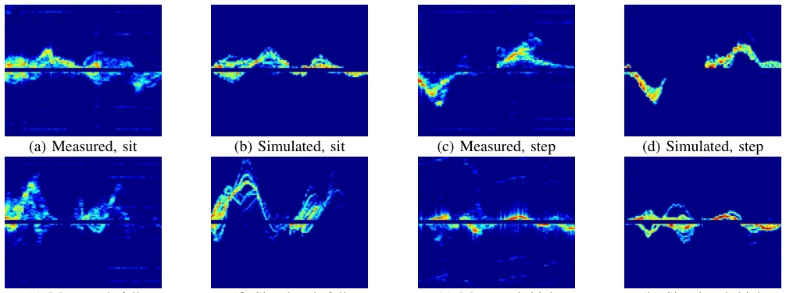
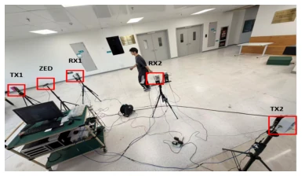
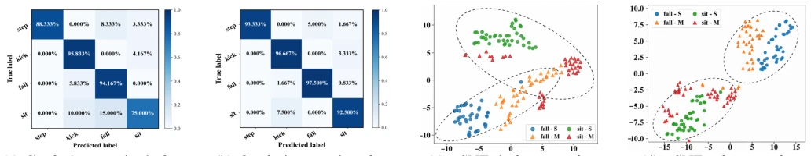
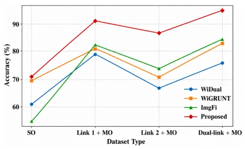

This paper attempts to use simulation to solve the chronic problem of "blindness when direction changes" in mmWave sensing. The S2M-Sense platform is quite interesting, using a depth camera to drive channel simulation, saving the trouble of data collection. Dual-link Doppler spectrum combined with a dual attention mechanism, essentially mastering feature extraction. However, the 60GHz hardware threshold is not low, and the simulator relies on ellipsoid approximation, where complex scattering in real scenarios might not be that perfect. Transferring with only 16 unlabeled samples sounds tempting, but generalization still depends on more scenarios. Overall, it is a solid Sim-to-Real work, but do not expect it to be directly deployed in all Wi-Fi devices, after all, mmWave and Wi-Fi physical layer differences are large. In addition, experiments only cover 4 simple actions, robustness in complex interaction scenarios is questionable, and multi-target interference issues are not discussed, so practical application requires caution.
mmWave Human Activity Recognition (HAR) performance drops drastically when user orientation changes, because signal distortion is large. Existing cross-domain methods are divided into two categories: synthetic samples (e.g., WiAG [5], CrossSense [6]) or learning invariant features (e.g., WiADG [7], Widar3.0 [8]). But most still rely on multi-orientation measured data, with high collection costs. Although S2R methods were proposed [12], [13], they did not solve the cross-orientation problem. This paper aims to eliminate dependency on multi-orientation labeled data, achieving low-cost deployment. Existing methods like WiDual [9] and WiGRUNT [10] although introduce attention mechanisms, still require a large amount of measured data. ImgFi [11] converts CSI to images, but does not solve the orientation sensitivity problem. Therefore, a new paradigm combining simulation and transfer learning is needed to balance performance and cost.
60.48 GHz system, 4 activities, 4 orientations. SSIM validates simulation fidelity (average 0.84). Sim-only accuracy 88.33%, reaching 95% after transfer with 16 unlabeled measured samples. Outperforms WiDual [9], WiGRUNT [10], and ImgFi [11]. t-SNE shows feature distribution aligned after transfer. Experiments use different volunteers for training and testing, reducing identity leakage. Dual-link data is better than single-link. SSIM metric shows simulated and measured spectrograms highly similar, proving physical model effective. Transfer learning only needs few samples to significantly improve performance, verifying the method's efficiency.

Fig. 3: Measured vs. simulated Doppler spectrograms for four actions (left: measured, right: simulated).

Fig. 4: Experimental layout of the 60 GHz sensing system.

Fig. 5: Confusion matrices and t-SNE visualizations before and after transfer.

Fig. 6: Accuracy comparison across various datasets.